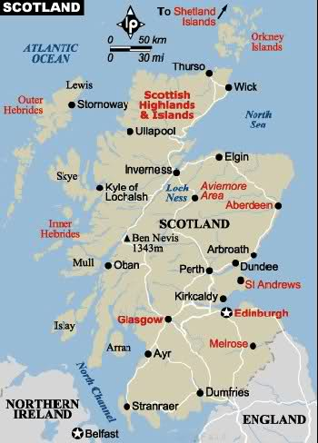

| Scotland is a country that is part of the United Kingdom and covers the northern third of the island of Great Britain. It shares a border with England to the south, and is otherwise surrounded by the Atlantic Ocean, with the North Sea to the east and the North Channel and Irish Sea to the south-west. In addition to the mainland, the country is made up of more than 790 islands,including the Northern Isles and the Hebrides. |
|---|
| Main Page |
England |
Wales |
Northern-Ireland |
|---|
 The mainland of Scotland comprises the northern third of the land mass of the island of Great Britain, which lies off the north-west coast of Continental Europe. The total area is 78,772 km2 (30,414 sq mi), comparable to the size of the Czech Republic. Scotland's only land border is with England, and runs for 96 kilometres (60 mi) between the basin of the River Tweed on the east coast and the Solway Firth in the west. The Atlantic Ocean borders the west coast and the North Sea is to the east. The island of Ireland lies only 21 kilometres (13 mi) from the south-western peninsula of Kintyre; Norway is 305 kilometres (190 mi) to the east and the Faroes, 270 kilometres (168 mi) to the north. The territorial extent of Scotland is generally that established by the 1237 Treaty of York between Scotland and the Kingdom of England and the 1266 Treaty of Perth between Scotland and Norway. Important exceptions include the Isle of Man, which having been lost to England in the 14th century is now a crown dependency outside of the United Kingdom; the island groups Orkney and Shetland, which were acquired from Norway in 1472; and Berwick-upon-Tweed, lost to England in 1482. The geographical centre of Scotland lies a few miles from the village of Newtonmore in Badenoch. Rising to 1,344 metres (4,409 ft) above sea level, Scotland's highest point is the summit of Ben Nevis, in Lochaber, while Scotland's longest river, the River Tay, flows for a distance of 190 kilometres (118 mi).
| Fun Facts |
|---|
| The capital of Scotland is Edinburgh while the largest city is Glasgow. Other major cities include Aberdeen and Dundee. |
| Scotland has over 300 railway stations. |
| Scotland has a unique culture with traditions such as bagpipes, kilts and highland dancing. |
| Scotland is located in Europe, at the northern end of Great Britain. |
| The highest mountain in Scotland is Ben Nevis which stands at a height of 1344 metres, or 4409 feet. |